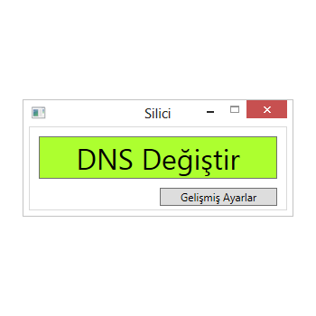
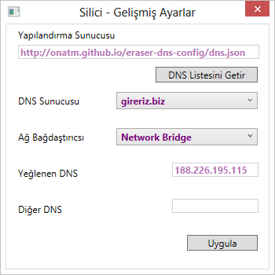

Eraser - Ammunition against tyyp://
tyyp://'nin kısıtlamalarından sıkıldıysanız, hangi DNS sunucusu çalışıyor, hangisi tüm siteleri açabiliyor diye düşünmek istemiyorsanız Eraser ile bu sıkıntılardan tek tuşla kurtulabilirsiniz.
Varsayılan DNS sunucu ayarı olarak gireriz.biz (188.226.195.115) servisini kabul edilmiştir.
Kolay Kullanım
Tek bir tuşla DNS ayarlarınızı otomatik olarak değiştirin.


Gelişmiş Ayarlar
DNS listesini istediğiniz yapılandırma sunucusundan indirebilir, tüm ağ bağdaştırıcıları için farklı DNS sunucusu ayarı yapabilirsiniz.
"Hi, you've just been erased."